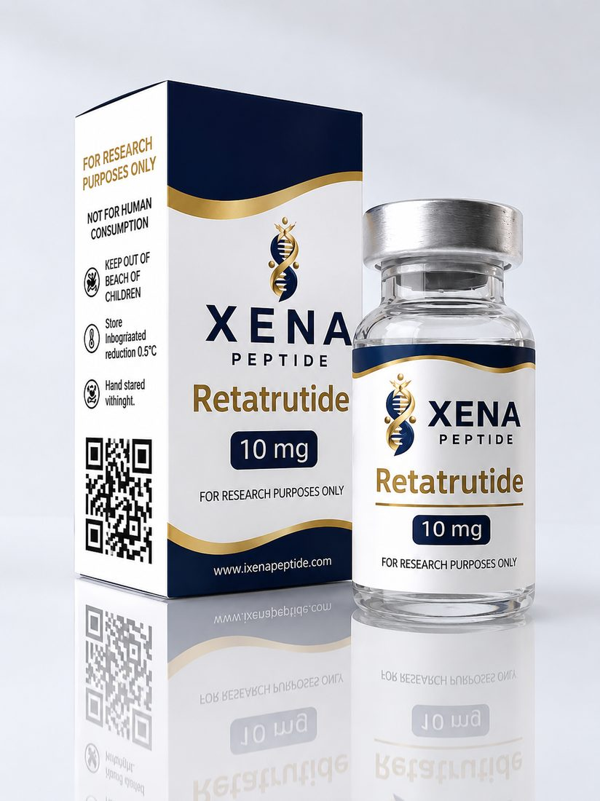

QUALITY & DOCUMENTATION
Product pages organize specifications and research context. Batch-specific analytical documentation should be added only when verified and available.
VIEW QUALITYResearch-oriented peptide catalogue for scientific and laboratory reference.
EXPLORE PRODUCTSVIEW RESEARCH
Product pages organize specifications and research context. Batch-specific analytical documentation should be added only when verified and available.
VIEW QUALITYOpen any product to see what it is and what the research literature investigates.
EXPLORE RESEARCHAll catalogue content is informational. Nothing on this website is medical advice or a claim of suitability for human use.
xenapeptide@gmail.com
WhatsApp: +49 1521 6767415
Telegram: XenaPeptide